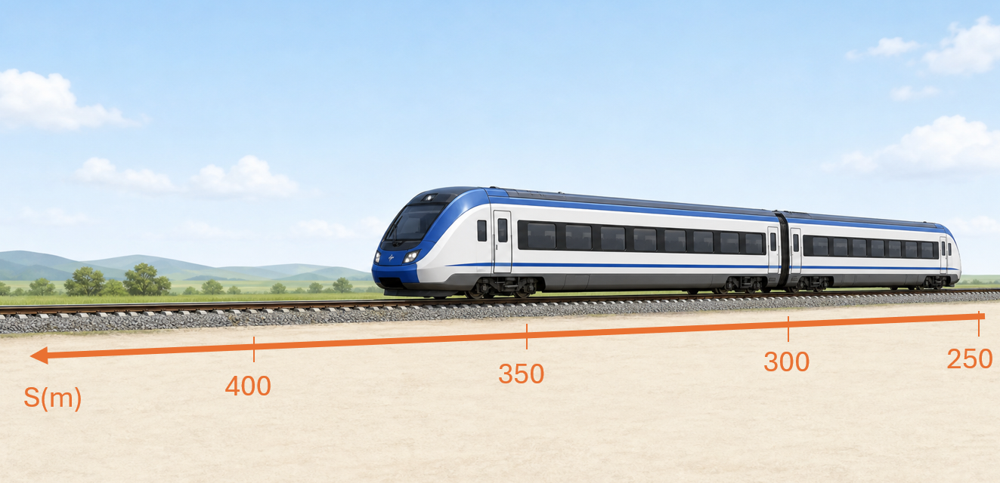
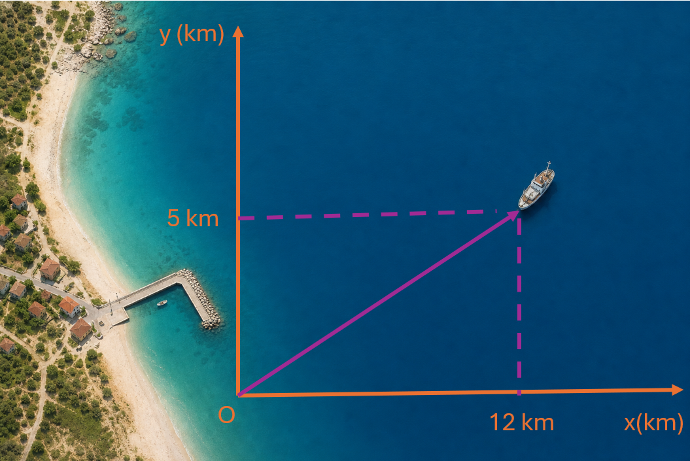
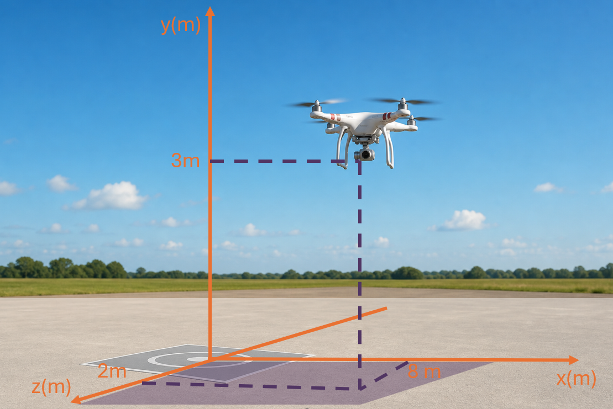
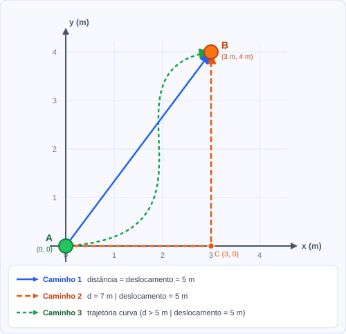

1 O que é movimento?
À primeira vista, movimento parece uma coisa fácil de reconhecer: quem caminha está em movimento; quem está sentado está parado. Mas a Física começa justamente quando essa certeza balança. Um passageiro sentado dentro de um ônibus está parado ou está viajando a 60 km/h? A resposta não está no passageiro: está no referencial escolhido.
Para a Física, um corpo está em movimento quando sua posição muda com o tempo em relação a um referencial. Não importa se ele faz força, se tem motor, se está vivo, se “parece” parado ou se está sendo carregado por outro corpo. A pergunta decisiva é sempre a mesma: a posição dele está mudando em relação ao referencial escolhido?
Pense em um passageiro sentado em um ônibus que se move a 60 km/h. Ele está parado ou em movimento? A resposta depende do referencial:
Observador 1 — dentro do ônibus: o passageiro está sentado no mesmo banco desde o início da viagem. Sua posição em relação ao banco não muda. Para esse observador, o passageiro está em repouso.
Observador 2 — na calçada: o passageiro passa na frente da pessoa parada na calçada a 60 km/h. Sua posição em relação à calçada muda a cada segundo. Para esse observador, o passageiro está em movimento.
As duas respostas são corretas ao mesmo tempo, porque cada observador usa um referencial diferente. O passageiro não está “parado de verdade” nem “em movimento de verdade” de forma absoluta. Em relação ao ônibus, está em repouso; em relação à calçada, move-se junto com o ônibus.
Esse exemplo revela uma ideia importante: movimento não é uma propriedade isolada do objeto. É uma relação entre o objeto observado e o referencial adotado. Dizer “o objeto está em movimento” sem dizer em relação a quê é como dizer “ele está à esquerda” sem dizer à esquerda de quê. Falta uma parte essencial da informação.
A mesma lógica aparece em situações muito diferentes:
A 900 km/h em relação ao solo, mas a xícara de café sobre a mesinha está em repouso em relação ao passageiro. Os dois movimentos existem ao mesmo tempo.
Se dois carros trafegam na mesma velocidade e direção, estão em repouso um em relação ao outro — mas ambos em movimento em relação ao asfalto.
A estação espacial orbita a Terra a aproximadamente 28 000 km/h. Dentro dela, o astronauta pode estar em repouso em relação às paredes da estação, mas em movimento muito rápido em relação ao solo terrestre.
Provavelmente em repouso em relação à cadeira. Ao mesmo tempo, em movimento em relação ao Sol: a Terra orbita o Sol a aproximadamente 107 000 km/h. Não percebemos isso no cotidiano porque o ar, o chão e quase tudo ao nosso redor acompanham a Terra nesse movimento.
Movimento e repouso são sempre relativos ao referencial adotado. Nunca faz sentido perguntar "esse objeto está em movimento?" sem completar a pergunta: em movimento em relação a quê?
2 Referencial
O referencial é o ponto de vista a partir do qual descrevemos um movimento. Na prática, escolhemos um corpo ou ponto e o tratamos como se estivesse fixo: pode ser o chão, um ônibus, uma árvore, o centro da Terra ou qualquer outro objeto conveniente. Essa escolha não torna o referencial “imóvel de verdade” no universo; ela apenas define o ponto de partida das medidas.
Depois que o referencial é escolhido, todas as posições, velocidades e trajetórias passam a ser descritas em relação a ele. Por isso, dois observadores podem olhar para o mesmo fenômeno e obter números diferentes sem que nenhum deles esteja “errado”. Eles apenas adotaram pontos de vista diferentes.
Para transformar essa escolha em medidas, usamos um sistema de coordenadas: uma origem, eixos e sentidos positivos. O referencial diz “em relação a quem” o movimento será descrito; o sistema de coordenadas diz “com quais números” essa descrição será feita.
Alguns referenciais comuns ajudam a perceber como a escolha muda a descrição:
O referencial mais comum no cotidiano. Veículos, pessoas e objetos têm sua posição e movimento descritos em relação ao chão.
Um carro ou ônibus também pode ser usado como referencial. Nesse caso, passageiros sentados estão em repouso em relação ao veículo, enquanto prédios, postes e árvores parecem se mover no sentido contrário.
Usado para descrever o movimento de satélites e da Lua. Nesse referencial, a superfície da Terra também se move, por causa da rotação.
Referencial heliocêntrico: descreve as órbitas dos planetas. Nele, a Terra se move a ~107 000 km/h ao redor do Sol.
A escolha do referencial não muda o fenômeno físico; muda a forma de descrevê-lo. Em problemas do Ensino Médio, salvo indicação contrária, costuma-se adotar o solo como referencial. Mas essa escolha não é obrigatória: um bom referencial pode transformar um problema complicado em um problema simples.
Nem todo referencial torna a Física igualmente simples. Um referencial preso ao chão de uma sala costuma funcionar bem para muitos problemas cotidianos. Já um referencial preso a um carrossel em rotação exige cuidados extras, pois nele aparecem efeitos aparentes. Referenciais que não estão acelerando nem girando são chamados de referenciais inerciais. Eles serão estudados com mais cuidado em Dinâmica.
3 Sistemas de coordenadas
Escolher um referencial responde à pergunta “em relação a quê?”. Mas ainda falta outra pergunta: “onde exatamente?”. Para responder a ela, usamos um sistema de coordenadas: uma origem, eixos orientados e números que localizam pontos no espaço. Cada número usado nessa localização recebe o nome de coordenada.
Antes de aparecer nas equações da Física, essa ideia já aparece em muitos sistemas que usamos para nos localizar no mundo.
Qualquer ponto na superfície da Terra pode ser identificado por duas coordenadas: latitude (distância angular ao norte ou ao sul do equador, de −90° a +90°) e longitude (distância angular a leste ou oeste do meridiano de Greenwich, de −180° a +180°). Juntas, formam um sistema de coordenadas bidimensional que cobre toda a superfície do planeta.
Para localizar um ponto acima ou abaixo da superfície — um avião, um drone, um balão meteorológico —, acrescenta-se a altitude. Com três coordenadas (latitude, longitude e altitude), a posição fica determinada em relação à Terra. É essa a lógica por trás de sistemas como o GPS: combinar medidas feitas a partir de satélites para determinar uma localização.
O número de uma casa também é uma coordenada: ele localiza a construção ao longo de uma rua. Em muitas cidades brasileiras, esse número se aproxima da distância, em metros, até o início da via — uma casa de número 340 tende a estar perto de 340 m do ponto zero daquela rua. Mas o número sozinho não basta: é preciso saber a rua, o bairro e a cidade. Um endereço completo funciona como um sistema de localização em camadas, que vai reduzindo a ambiguidade até chegar a um ponto específico.
Em uma sala de cinema, cada poltrona pode ter um código como D-12: a letra identifica a fileira, e o número identifica a posição dentro dessa fileira. Dois dados bastam para localizar um assento num plano — um sistema bidimensional. Estádios fazem algo parecido, combinando setor, fileira e assento.
Edifícios acrescentam uma terceira informação: o andar. Um quarto de hotel “305”, por exemplo, geralmente indica 3º andar, quarto 05. A localização deixa de depender apenas de “linha e coluna” no chão e passa a incluir também a altura.
Nas rodovias brasileiras, muitos pontos da estrada são identificados pelo marco quilométrico. “BR-101, km 250” indica uma posição ao longo daquela via: 250 km medidos a partir do km 0, no sentido crescente da quilometragem. Esse é um sistema de coordenadas unidimensional: uma única coordenada localiza o ponto ao longo da estrada, desde que a rodovia e o estado também estejam especificados.
Uma particularidade importante é que a quilometragem reinicia a cada fronteira estadual. Por isso, a coordenada “km 45” não basta sozinha: é preciso informar também a rodovia e o estado. “BR-101/SC km 45” e “BR-101/PR km 45”, por exemplo, indicam posições diferentes, embora tenham o mesmo número quilométrico.
O número de uma rodovia federal não é aleatório: ele segue uma lógica do Plano Nacional de Viação (PNV) e já dá pistas sobre a orientação geral da via. Em outras palavras, parte da localização está embutida no próprio código da rodovia.
- 0 — radiais: partem do anel rodoviário de Brasília em direção aos extremos do país, numeradas de 05 a 95 no sentido horário (BR-040, BR-050, BR-060, BR-070…)
- 1 — longitudinais: percorrem o país no sentido norte–sul; a numeração vai de 00 (extremo leste) a 50 (à altura de Brasília) e de 50 a 99 (extremo oeste) (BR-101, BR-116, BR-153, BR-163…)
- 2 — transversais: percorrem o país no sentido leste–oeste; a numeração vai de 00 (extremo norte) a 50 (à altura de Brasília) e de 50 a 99 (extremo sul) (BR-230, BR-242, BR-262, BR-290…)
- 3 — diagonais: cortam o país em sentidos oblíquos; números pares têm orientação NO–SE, números ímpares têm orientação NE–SO (BR-316, BR-364, BR-381, BR-386…)
- 4 — de ligação: conectam rodovias federais entre si, cidades importantes ou pontos de fronteira internacional (BR-401, BR-407, BR-470, BR-488…)
O km 0 segue uma lógica geográfica consistente: o número cresce sempre em direção ao sul e ao oeste. Portanto:
- Nas radiais, o km 0 fica no anel rodoviário de Brasília
- Nas longitudinais, o km 0 fica na extremidade norte (com exceções: BR-163 e BR-174)
- Nas transversais, o km 0 fica na extremidade leste (geralmente o litoral)
- Nas diagonais, o km 0 fica na extremidade que aponta mais para o norte ou para o leste, de acordo com a orientação específica de cada rodovia
A quilometragem reinicia a cada fronteira estadual. Uma mesma BR pode ter um km 100 em cada estado que atravessa — todos diferentes no espaço, mas com o mesmo número. Por isso, para identificar um ponto sem ambiguidade, é necessário indicar também o estado: "BR-101/SC km 100" e "BR-116/SP km 100" são localizações completamente distintas.
Veja como essa lógica aparece em algumas rodovias conhecidas:
- BR-101 — longitudinal, começa em Touros (RN) e percorre todo o litoral atlântico por cerca de 4 800 km até São José do Norte (RS), na fronteira com o Uruguai. Uma das mais longas do país.
- BR-116 — longitudinal, parte de Fortaleza (CE) e termina em Jaguarão (RS), passando pelas regiões metropolitanas de São Paulo e Curitiba, com extensão de cerca de 4 500 km. Também uma das mais longas do país.
- BR-230 (Transamazônica) — transversal, começa em Cabedelo (PB), no litoral nordestino, e avança por mais de 4 000 km em direção ao oeste, cruzando o Pará e o Amazonas. Grande parte do trecho amazônico permanece sem pavimentação.
- BR-040 — radial, parte de Brasília (km 0 no anel rodoviário do DF) e chega ao Rio de Janeiro após cerca de 1 200 km, sendo uma das principais ligações entre o planalto central e o litoral sudeste.
A ideia central é esta: um código de localização só faz sentido dentro de um sistema. O número da BR, o estado e o km formam juntos uma descrição muito mais precisa do que qualquer um deles isoladamente.
Em Física, os sistemas de coordenadas mais comuns usam eixos perpendiculares entre si, todos partindo de uma mesma origem. Quando o movimento acontece numa linha reta, basta um único eixo: uma reta numérica com sentido positivo definido. É nesse eixo que vamos marcar a posição de um corpo na próxima seção.
4 Posição
A posição de um corpo indica onde ele está em relação à origem escolhida. Em outras palavras: depois de definir o referencial, a origem, os eixos e os sentidos positivos, a posição é o “endereço” do corpo nesse sistema. O número de coordenadas necessárias depende de quantas dimensões queremos descrever:
Quando buscamos analisar movimentos que ocorrem ao longo de uma linha, basta uma única informação para identificar a posição do corpo e consequentemente, uma dimensão (1D). Essa linha costuma ser reta em muitos problemas de cinemática, mas também pode ser uma trajetória curva descrita por uma coordenada ao longo do caminho, como a quilometragem de uma estrada. Se precisamos localizar um corpo num plano, usamos duas coordenadas (2D); se precisamos localizar um corpo no espaço, usamos três (3D).



Para representar a posição matematicamente, usamos o vetor posição, indicado por r. Em uma dimensão, é comum escrever a posição como s ou x: um número com sinal, positivo ou negativo conforme o sentido escolhido no eixo. Em duas ou três dimensões, o vetor posição reúne as coordenadas necessárias para localizar o corpo:
A posição é sempre medida em relação à origem do sistema de coordenadas. Mudar a origem muda os valores das coordenadas, mas não muda o ponto onde o corpo está. Em problemas de Física, escolher bem a origem pode simplificar os cálculos.
5 Deslocamento
O deslocamento mede a mudança de posição de um corpo. Ele compara apenas duas informações: onde o corpo estava no início e onde está no final. Por isso, o deslocamento é representado por um vetor que aponta da posição inicial para a posição final, independentemente do caminho percorrido entre elas.
Em uma dimensão, o deslocamento é calculado pela diferença entre a coordenada final e a coordenada inicial. O sinal do resultado indica o sentido do deslocamento em relação ao eixo escolhido.
Mesmo que o corpo vá e volte durante o movimento, o deslocamento não soma todos os trechos percorridos. Ele liga apenas a posição inicial à posição final. Por isso, dois movimentos muito diferentes podem ter o mesmo deslocamento — e um corpo pode se mover bastante e terminar com deslocamento pequeno, ou até nulo.
A trajetória teve ida e volta, mas o deslocamento considera só do início ao fim.
A posição final está no sentido positivo em relação à posição inicial.
A posição final está no sentido negativo em relação à posição inicial.
Um atleta parte de s₀ = 10 m e chega a s = 70 m.
\( \Delta s = 70 - 10 = +60\,\text{m} \)
O sinal positivo indica deslocamento no sentido positivo do eixo.
Se ele voltar para s = 30 m, o deslocamento total em relação à posição inicial será:
\( \Delta s = 30 - 10 = +20\,\text{m} \)
Isso acontece mesmo que ele tenha corrido 60 + 40 = 100 m no total.
Em duas dimensões, fazemos a mesma comparação em cada eixo. O vetor deslocamento reúne essas componentes, e seu módulo pode ser calculado pelo Teorema de Pitágoras:
\( \Delta \vec{r} = (x - x_0,\; y - y_0) = (\Delta x,\; \Delta y) \)
\( |\Delta \vec{r}| = \sqrt{\Delta x^2 + \Delta y^2} \)
\( \Delta \vec{r} = (\Delta x,\; \Delta y) = (3\,\text{m},\;4\,\text{m}) \)
\( |\Delta \vec{r}| = \sqrt{\Delta x^2 + \Delta y^2} = \sqrt{3^2 + 4^2} = 5\,\text{m} \)
Em três dimensões, a ideia é a mesma: comparamos as coordenadas inicial e final nos três eixos, obtendo Δx, Δy e Δz.
Uma bola sai da posição r₀ = (2 m, 1 m) e chega a r = (5 m, 5 m), seguindo qualquer trajetória entre os dois pontos.
\( \Delta x = 5 - 2 = 3\,\text{m} \)
\( \Delta y = 5 - 1 = 4\,\text{m} \)
\( \Delta \vec{r} = (3\,\text{m},\;4\,\text{m}) \)
\( |\Delta \vec{r}| = \sqrt{3^2 + 4^2} = \sqrt{9 + 16} = \sqrt{25} = 5\,\text{m} \)
O módulo do deslocamento é 5 m — seja qual for o caminho percorrido entre os dois pontos.
O deslocamento depende apenas das posições inicial e final — não do caminho percorrido. Em 1D, o sinal indica a direção. Em 2D e 3D, a direção é dada pelas componentes do vetor. O módulo do deslocamento é sempre menor ou igual à distância percorrida.
6 Distância percorrida vs. deslocamento
A distância percorrida é o comprimento total do caminho seguido pelo corpo — a soma de todos os trechos, independentemente de direção ou sentido. É sempre positiva e nunca diminui. O módulo do deslocamento mede apenas a separação em linha reta entre o ponto de partida e o ponto de chegada.
Em duas dimensões, a diferença fica especialmente clara: a distância percorrida depende da trajetória escolhida; o módulo do deslocamento não — é sempre o comprimento do segmento reto que liga o início ao fim, independentemente do caminho.
A figura mostra uma esfera que parte do ponto A e chega ao ponto B por três rotas distintas. Como o ponto de partida e o ponto de chegada são os mesmos nos três casos, o deslocamento resultante é idêntico — independentemente do caminho percorrido.

Pelo caminho 1 (azul), a esfera seguiu em linha reta — o percurso mais curto possível entre dois pontos. Por isso, a distância percorrida coincidiu exatamente com o módulo do deslocamento: 5 m.
Pelo caminho 2 (laranja), a esfera foi em linha reta de A até C e depois de C até B, formando um percurso em L. Ao contornar esse canto, acumulou 3 m + 4 m = 7 m de distância — mais do que os 5 m do deslocamento.
Pelo caminho 3 (verde), a esfera descreveu uma trajetória curva e sinuosa. A distância percorrida correspondeu ao comprimento total dessa curva — certamente maior que 5 m —, mas como o ponto de chegada é o mesmo, o deslocamento não se altera.
| Grandeza | Símbolo | Tipo | Depende do caminho? | Pode ser zero com movimento? |
|---|---|---|---|---|
| Distância percorrida | d | Escalar (≥ 0) | Sim | Não |
| Módulo do deslocamento | |Δr| | Escalar (≥ 0) | Não | Sim (ida e volta ao mesmo ponto) |
| Deslocamento | Δr | Vetorial | Não | Sim |
O módulo do deslocamento é sempre menor ou igual à distância percorrida: |Δr| ≤ d. A igualdade vale apenas quando o corpo se move em linha reta sem jamais inverter o sentido.
7 Simulador: posição e deslocamento em 2D
📍 Plano cartesiano: posição e deslocamento
Controle as posições inicial e final do objeto, determinando seu vetor deslocamento em cada situação.
8 Resumo
O que você aprendeu
- Um corpo está em movimento quando sua posição varia com o tempo em relação a um referencial escolhido. Movimento e repouso são sempre conceitos relativos.
- O referencial é o corpo ou ponto adotado como fixo para realizar as medidas. Sua escolha é livre e deve ser a mais conveniente para o problema.
- O vetor posição \(\vec{r}\) indica onde o corpo se encontra em relação à origem do referencial. Em uma dimensão usa-se uma única coordenada; em duas dimensões, o par \((x,\,y)\); em três dimensões, a tripla \((x,\,y,\,z)\).
-
O deslocamento é o vetor que aponta da posição inicial até a posição final do corpo:
\( \Delta\vec{r} = \vec{r} - \vec{r}_0 \)
Em duas dimensões, seu módulo é dado por:\( |\Delta\vec{r}| = \sqrt{\Delta x^2 + \Delta y^2} \)
- A distância percorrida é o comprimento total do caminho seguido. Ela é sempre positiva e nunca inferior ao módulo do deslocamento.